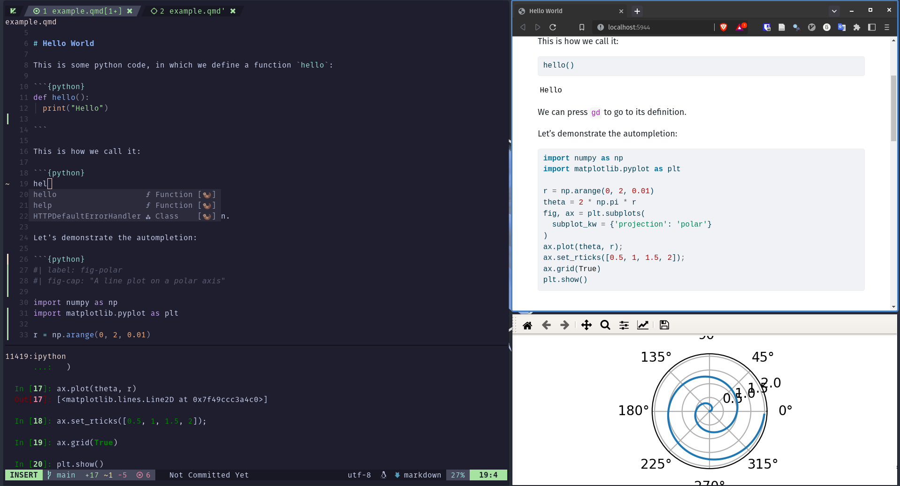

您好,Quarto
Overview
In this tutorial we’ll show you how to use Quarto with Neovim. While we cover the basics here, you will also want to review the article on Using Neovim with Quarto to learn more about installing, using, and customizing Neovim for Quarto.
If you already have Neovim configured to your liking, you may only want to add the quarto-nvim plugin and only refer to this guide for inspiration and seeing the possibilities. But if you are entirely new to Neovim or want to simply try out a configuration already set up for data science with Quarto, you should head over to this kickstarter configuration. This is also what we will be using for this tutorial.
Neovim is a highly customizable editor. So much so that Neovim core member TJ Devries has recently coined the term Personal Development Environments (PDE)1 to separate the concept from Integrated Development Environments (IDEs) such as VS Code and RStudio.
Out of the box neovim is fairly minimal. To work efficiently and get all the nice features, you have to configure it. You have to make it your own. If this approach sounds enticing to you, read on. Welcome to the rabbit hole. 🐰
You can also watch this video for a quick guide to getting started with the kickstarter configuration alongside this write-up.
The Quarto Neovim plugin aims to not reinvent the wheel. Existing plugins in the Neovim ecosystem are leveraged to provide the full experience. Some of the features provided by quarto-nvim and enhanced by plugins found in the kickstarter configuration are:
- Preview for Quarto documents.
- Syntax highlighting for markdown and embedded languages
- Completion for embedded languages (e.g. Python, R, Julia, etc.)
- Commands and key-bindings for running cells and selected lines.
- Completion for bibliography references, file paths, LaTeX math symbols, emoji.
- Optional spellchecking and completion.
- Code snippets.
- Export of code chunks into standalone scripts.
See the article on Using Neovim with Quarto for all of the details.
Basic Workflow
Quarto .qmd files contain a combination of markdown and executable code cells. Here’s what it might look like in Neovim to edit and preview a .qmd file:

The document on the right is rendered into the HTML version you see on the left. This is the basic model for Quarto publishing—take a source document and render it to a variety of output formats, including HTML, PDF, MS Word, etc.
The tutorials will make use of the matplotlib and plotly Python packages—the commands you can use to install them are given in the table below.
| Platform | Commands |
|---|---|
| Mac/Linux | Terminal |
| Windows | Terminal |
Note that while this tutorial uses Python, using Julia (via the IJulia kernel) or using R (via the knitr package), are also well supported. See the articles on Using Julia and Using R for additional details.
Render and Preview
We’ll start out by rendering a simple example (hello.qmd) to a couple of formats. If you want to follow along step-by-step in your own environment, create a new file named hello.qmd and copy the following content into it.
---
title: "Quarto Basics"
format:
html:
code-fold: true
jupyter: python3
---
For a demonstration of a line plot on a polar axis, see @fig-polar.
```{python}
#| label: fig-polar
#| fig-cap: "A line plot on a polar axis"
import numpy as np
import matplotlib.pyplot as plt
r = np.arange(0, 2, 0.01)
theta = 2 * np.pi * r
fig, ax = plt.subplots(
subplot_kw = {'projection': 'polar'}
)
ax.plot(theta, r);
ax.set_rticks([0.5, 1, 1.5, 2]);
ax.grid(True);
plt.show()
```To render and preview, execute the QuartoPreview command by pressing : to enter command mode and typing the command (there is autocompletion if you press the tab key). In the kickstarter configuration, there are more shortcuts starting with space q (spacebar followed by q, in normal mode).
How it Works
When you render a .qmd file with Quarto, the executable code blocks are processed by Jupyter, and the resulting combination of code, markdown, and output is converted to plain markdown. Then, this markdown is processed by Pandoc, which creates the finished format.

Running Cells
You don’t need to fully render documents in order to iterate on code cells. With the provided configuration we can open a terminal of our choosing using the leader key (<space>) followed byc (for code) and then p (for python) or i (for ipython).
If you wait a little in between the key presses a small window pops up at the bottom of your screen to tell you about existing keybindings:

We can navigate between the code and the terminal using ctrl plus vim direction keys and enter commands into the python REPL by going into insert mode in this terminal buffer.
To send code to the python REPL from quarto we navigate to one of our code blocks and press <space><cr> (space bar followed by Enter). The plugin responsible for sending code to various places, vim-slime will prompt us with the question which terminal to send the code to, pre filled with the latest terminal we created.

If you want to use ctrl+Enter to send code just like in RStudio, you are going to have to tell your terminal emulator to send the correct key codes. For example, in the kitty terminal the configuration looks as follows:
map ctrl+shift+enter no_op
map shift+enter send_text all \x1b[13;2u
map ctrl+enter send_text all \x1b[13;5uThis is what the kickstarter configuration has been tested with.
There are few different types of content in hello.qmd, let’s work a bit with each type.
YAML Options
At the top of the file there is a YAML block with document level options.
---
title: "Quarto Basics"
format:
html:
code-fold: true
jupyter: python3
---Try changing the code-fold option to false:
format:
html:
code-fold: falseThen re-render the document by saving it. You’ll notice that the code is now shown above the plot, where previously it was hidden with a Code button that could be used to show it.
Narrative content is written using markdown. Here we specify a header and a cross-reference to the figure created in the code cell below.
## Polar Axis
For a demonstration of a line plot on a polar axis, see @fig-polar.Try changing the header and re-rendering—the preview will update with the new header text.
Code Cells
Code cells contain executable code to be run during render, with the output (and optionally the code) included in the rendered document.
```{python}
#| label: fig-polar
#| fig-cap: "A line plot on a polar axis"
import numpy as np
import matplotlib.pyplot as plt
r = np.arange(0, 2, 0.01)
theta = 2 * np.pi * r
fig, ax = plt.subplots(
subplot_kw = {'projection': 'polar'}
)
ax.plot(theta, r)
ax.set_rticks([0.5, 1, 1.5, 2])
ax.grid(True)
plt.show()
```You are likely familiar with the Matplotlib code given here. However, there are some less familiar components at the top of the code cell: label and fig-cap options. Cell options are written in YAML using a specially prefixed comment (#|).
In this example, the cell options are used to make the figure cross-reference-able. Try changing the fig-cap and/or the code then re-rendering to see the updated preview.
There are a wide variety of cell options that you can apply to tailor your output. We’ll delve into these options in the next tutorial.
One particularly useful cell option for figures is fig-alt, which enables you to add alternative text to images for users with visual impairments. See Amy Cesal’s article on Writing Alt Text for Data Visualization to learn more.
Next Up
You now know the basics of creating and authoring Quarto documents. The following tutorials explore Quarto in more depth:
Tutorial: Computations — Learn how to tailor the behavior and output of executable code blocks.
Tutorial: Authoring — Learn more about output formats and technical writing features like citations, crossrefs, and advanced layout.
See the article on Using Neovim with Quarto to learn more about installing, using, and customizing Neovim for Quarto.
脚注
In this video↩︎
if you are using the kickstarter configuration – otherwise
ctrl-sputs your terminal in a waiting mode until you pressctrl+q, which can be confusing↩︎